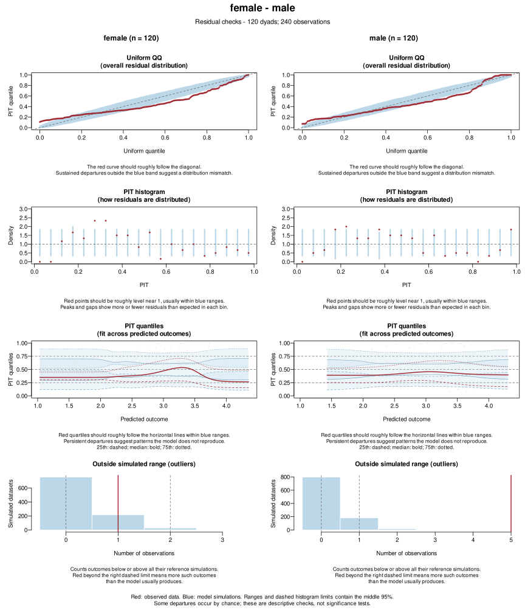
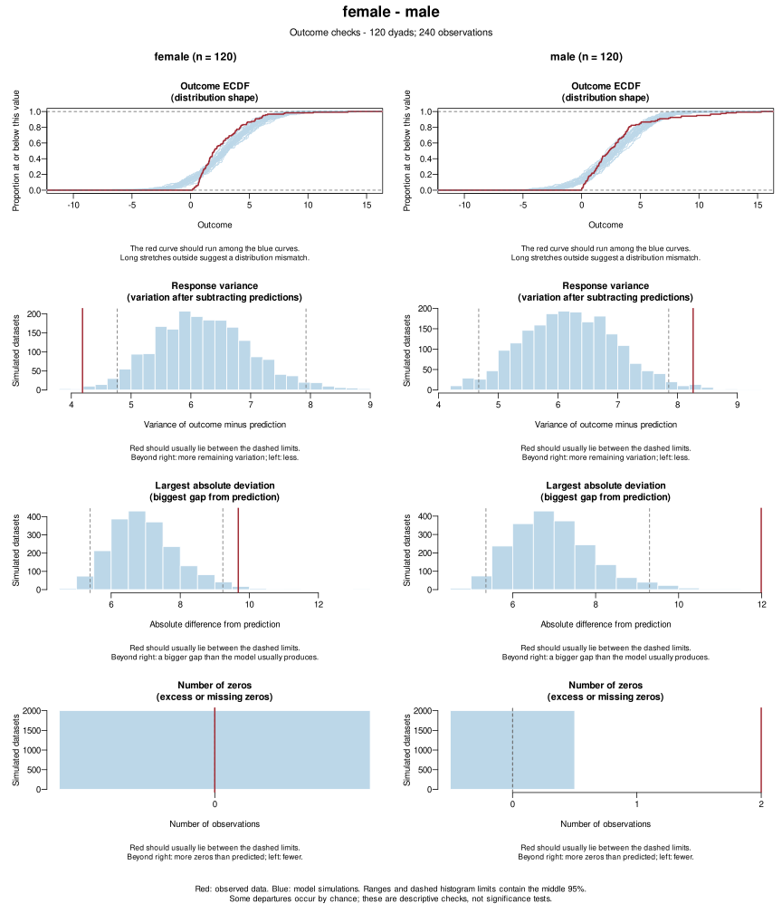
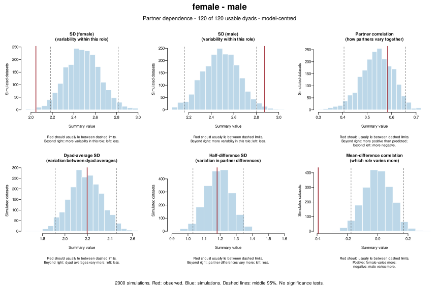
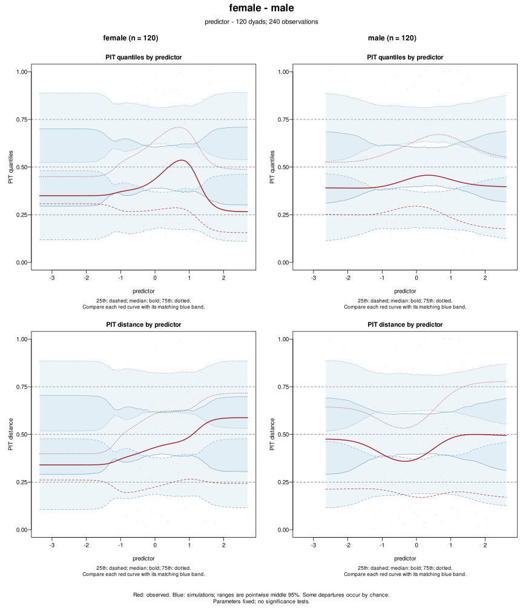
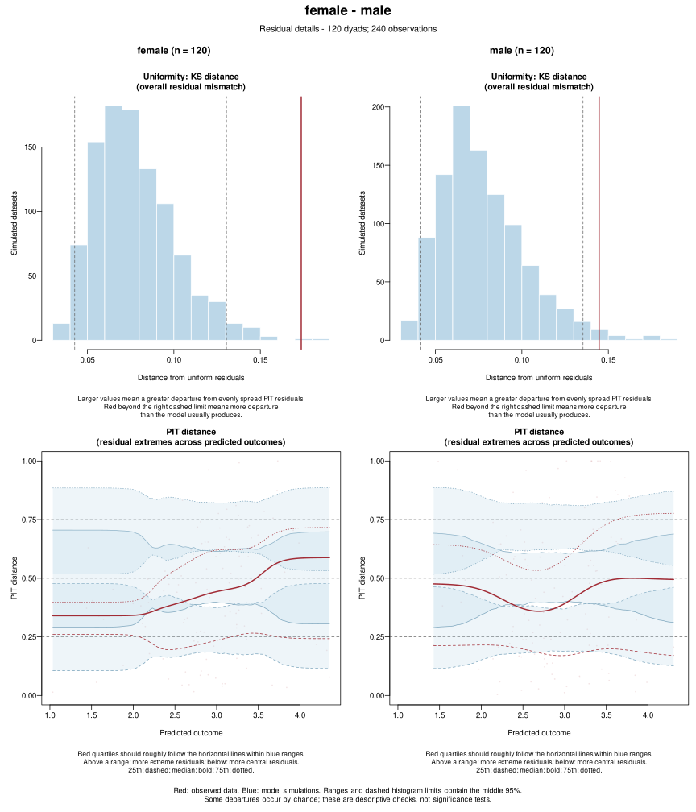
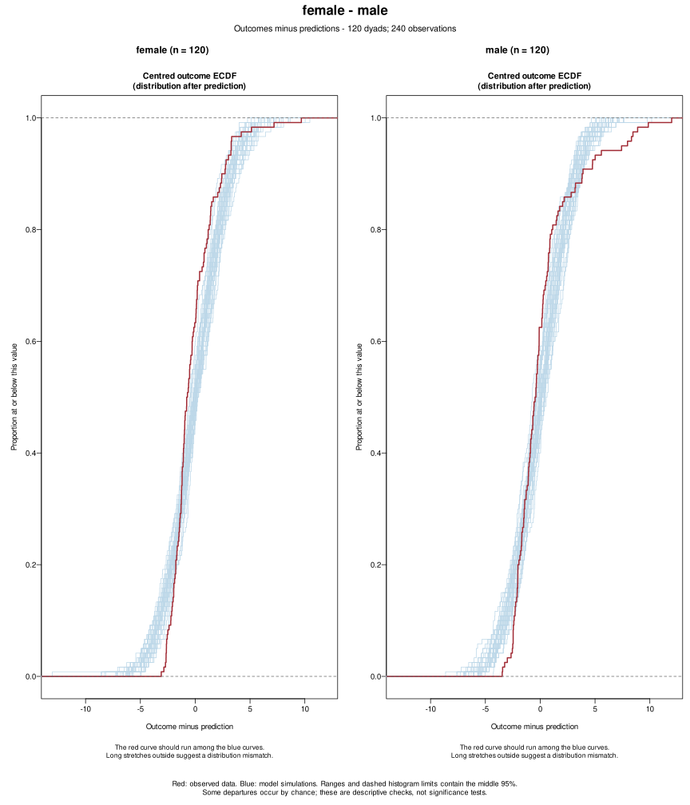
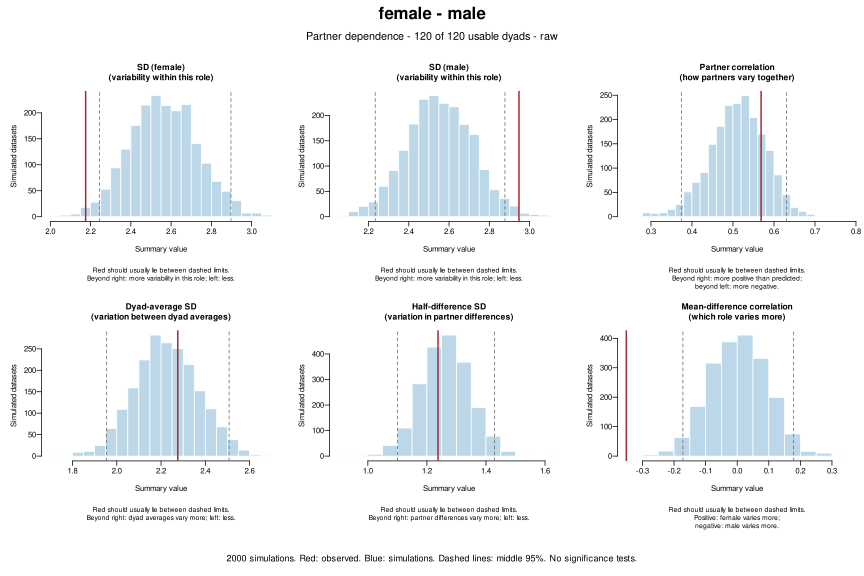

All available diagnostic pages for the earlier simulated dataset: 120 female-male dyads, 240 observations, original seed 100104. The generator used a log link, shared dyad effects and different dispersions by role (Tweedie power 1.5).
Fitted model: outcome ~ predictor + (1 | dyad), Gaussian identity link, dispformula = ~1. It omits the role effect and member-difference random effect, while estimating a common observation-level variance. The fit converged with a positive-definite Hessian.
Reference: 2,000 complete simulations, with new random effects and fixed fitted parameters. Residual checks use 1,000 to define PIT ranks and 1,000 for reference envelopes. Role labels are supplied through the original fitting data because the fitted model does not include them.
What fails: distribution shape, role-specific variability, extreme outcomes, and male zero counts. What still agrees: overall partner correlation and the SDs of dyad averages and partner half-differences.
Omitting the difference random effect does not force this model to miss positive partner correlation: its random intercept and observation-level noise can reproduce it. A failed panel cannot isolate which omitted assumption caused the mismatch.
Red is observed; blue is simulated. Ranges contain the middle 95% at each comparison, not across all plots. These are descriptive checks, not significance tests. This example illustrates their use; it does not establish general detection rates.
Data · Fitted model · Observed values and reference ranges · Package versions · Reproduction script
The QQ curves and uneven PIT frequencies reveal a distribution mismatch. Five male outcomes are outside their simulated ranges, versus a reference range of zero to one.

The Gaussian model generates negative values, misses the male zeros, and understates the largest deviations. Its common variance is too large for female responses and too small for male responses.

Both role SDs and the mean/difference correlation show unequal variability. Partner correlation itself is reproduced reasonably well.

Compare each red quartile curve with its matching blue band. With only 120 observations per role, local comparisons are less precise than the overall distribution checks.

The uniformity summaries show a broad distribution mismatch. PIT distance can reflect errors in either location or spread.

Subtracting the same fixed-effect predictions from all datasets leaves the asymmetric observed distribution visible.

These summaries include variation explained by the predictor. The same role-variance mismatch remains visible.
